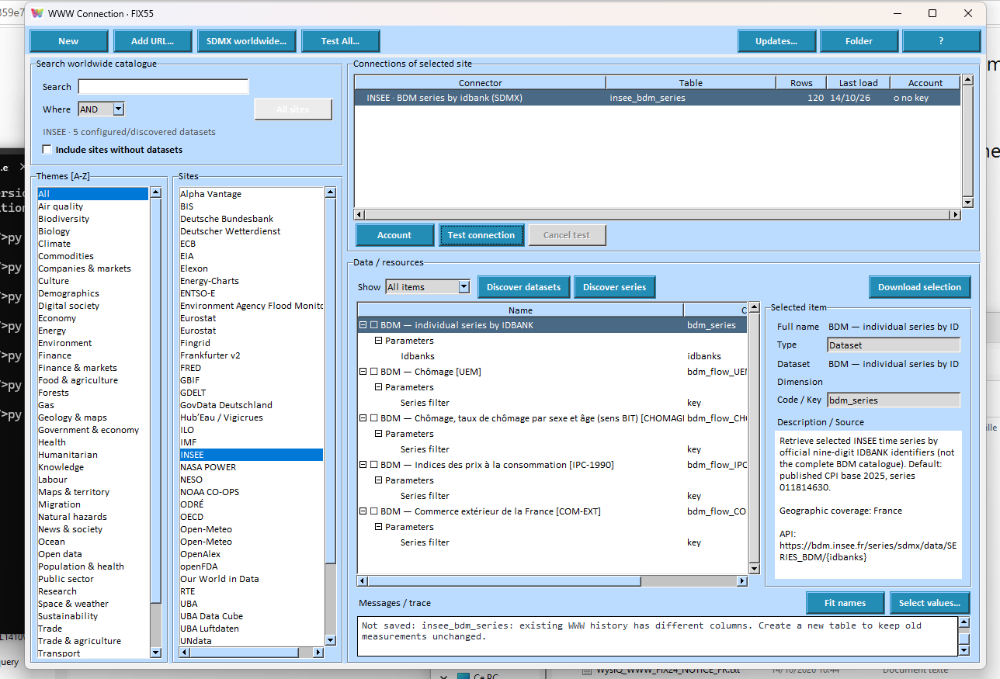

01 · CONNECT
All your sources in one graph.
Build a graph from tables of entirely different origins — no preliminary merging, no data consolidation.
- Local files, database servers and Internet data providers, side by side.
- Multi-domain WWW catalog: energy, weather, economy, environment, health… (RTE, ENTSO-E, INSEE, Eurostat, ECB, Open-Meteo, NASA POWER…).
- SQL Assistant to reduce and align large datasets before analysis.
